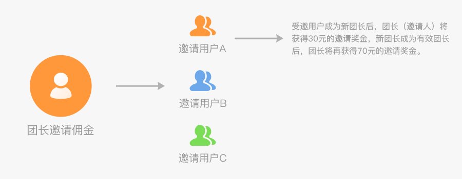
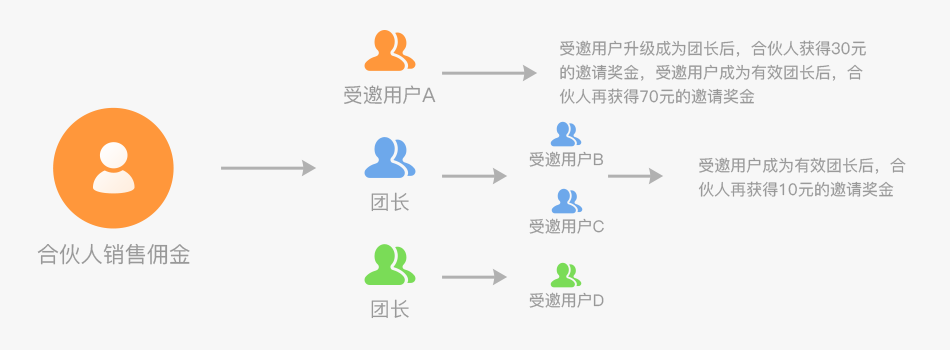
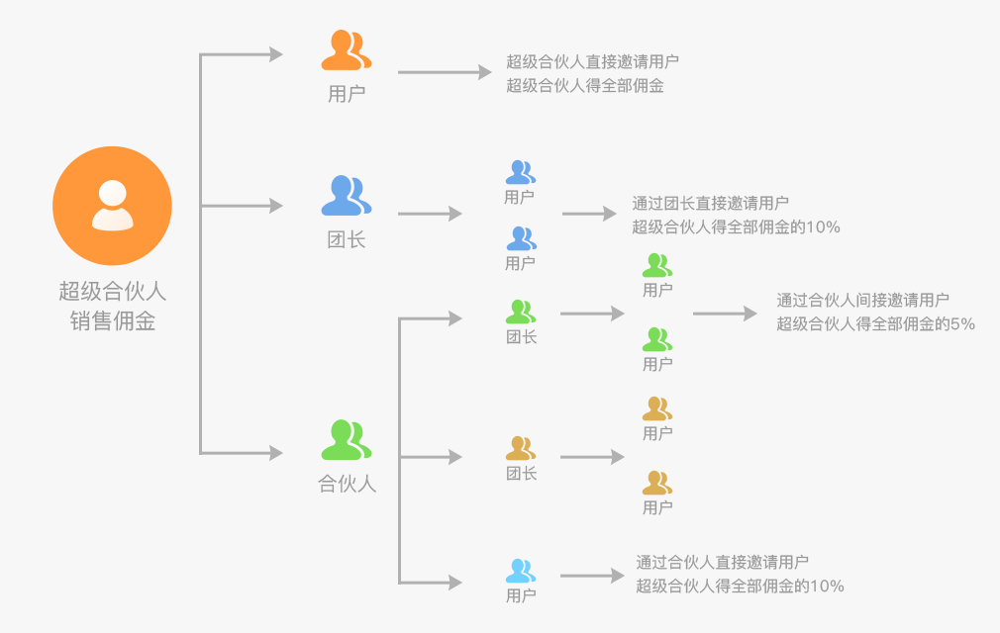

团享会收入详解
团享会是由四川来乎科技有限公司打造的，专注美食的社交电商平台，团队成员来自华为、腾讯、阿里、凤凰传媒等。我们深入一线产地，精挑细选，打造高品质的美食。在这里，你可以体验全球美食，自己消费享受福利优惠。在这里，你可以利用碎片化时间，轻松开店，零库存一站式服务让你轻松化身社交圈分享达人。团享会，我们一起分享健康、快乐的生活方式。
团享会基于分享经济，人人都可以参与到这个平台中来，自买省钱，分享赚钱，还可以实现0成本创业。可通过微信搜索小程序【团享会】访问。在这个平台中，层级关系如下，用户→团长→合伙人→超级合伙人，用户可升级为团长，团长可升级为合伙人，合伙人可升级为超级合伙人。如果级别越高，收入则越多。下面对团享会不同级别用户的收入作一个评估：
不同级别用户收入评估
-
一、名词解释下面先对本文后面要用到的一些常名词作一个解释：
- ①用户：首次访问小程序时同意【团享会】小程序获取你的个人信息后，即成为团享会平台的用户。
- ②邀请码：团长、合伙人和超级合伙人拥有的专属号码，由6位长度的数字和字母构成。
- ③邀请人：对团长、合伙人或超级合伙人的称呼，指他们邀请用户填写邀请码后，成为他们的邀请人
- ④受邀用户：已填有邀请码的用户，每一个受邀用户只对应一个邀请人。
- ⑤有效团长：指店铺销售佣金累计超过50元的团长。
- ⑥购物佣金：在团享会平台中，系统会将每一款商品售价的10%-30%将作为购物佣金，以奖励给团长、合伙人或超级合伙人的努力付出。用户购物产生的佣金也就是团长、合伙人和超级合伙人的销售佣金。
- ⑦用户锁定：用户首次访问某个团长(或合伙人和超级合伙人)的店铺后，将锁定关系，团长将一直享有该用户的购物佣金，不会因为其它团长的分享而改变。只有一种情况除外，该用户后面填了其它团长的邀请码，此时锁定关系解除。所以最好的办法就是让用户填写你的邀请码，实现永久锁定。
-
二、如何成为团长？
- 用户在小程序【团享会】消费满99元即可申请成为团长。
-
三、团长的权益
- 1、有自己独立的小程序店铺。
- 2、自买省钱：团长自己购买，所有佣金全归团长自己所有。
- 3、销售佣金：团长将自己的小程序店铺或某个商品通过微信群，朋友圈，公众号等方式分享给用户，一旦用户购买，团长将享有该用户购物佣金100%的收益，如下图所示： 
- 4、邀请奖金：如下图所示，受邀用户A升级成为新团长后，原团长(邀请人)将获得30元的邀请奖金，当受邀用户成为有效团长后，原团长(邀请人)将再获得70元的邀请奖金。
-
四、如何成为合伙人？
- 在邀请的用户中，累计有15人达到有效团长身份后，则邀请人自动升级成为合伙人身份。
-
五、合伙人的权益
- 1、享有团长拥有的一切权益。
- 2、销售佣金：合伙人不但享有自己店铺用户购物佣金100%的收益，还享有团长发展的用户购物佣金10%的收益，如下图所示： 
- 3、邀请奖金：如下图所示，当受邀用户A(已建立邀请关系)升级成为团长后，合伙人获得30元的邀请奖金，当受邀用户A成为有效团长后，合伙人再获得70元的邀请奖金。同时，受邀用户B，受邀用户C，受邀用户D成为有效团长，合伙人可再得10元邀请佣金 
-
六、如何成为超级合伙人？
- 在邀请的用户中，累计有15人达到合伙人身份后，则邀请人自动升级成为超级合伙人的身份。
-
七、超级合伙人的权益
- 1、享有团长、合伙人拥有的一切权益。
- 2、销售佣金：超级合伙人不但享有自己店铺用户购物佣金100%的收益，还享有团长发展的用户购物佣金10%的收益，如下图所示：
- 3、邀请奖金：如下图所示，当受邀用户A(已建立邀请关系)升级成为团长后，超级合伙人获得30元的邀请奖金，当受邀用户A成为有效团长后，超级合伙人再获得70元的邀请奖金。同时，受邀用户B，受邀用户C，受邀用户D成为有效团长，超级合伙人可再得10元邀请佣金:

- 4、五险一金：可以和团享会公司直接签订正式合同，享受底薪，五险一金，无忧赚钱，为您的事业提供保障。
-
八、购物佣金分配情况一览表

-
- 目前合伙人平均月利润在1到5万左右
- 一个合伙人至少有20个团长，每个团长按平均100个用户，合伙人团队人数15 x 100 = 1500人。合伙人还可以直接发展用户，平台推爆品时，假定客单价为59元，佣金为10元，前期你和你的团队做了足够的准备工作，收入非常值得期待。
- 目前超级合伙人平均月利润在10到50万左右
- 一个超级合伙人至少有15名合伙人，每名合伙人有至少15个团长，按每个团长按平均100个用户，超级合伙人团队人数15 x 15 x 100 = 22500用户。同时，超级合伙人还可以发展直接用户。平台推爆品时，假定客单价为59元，佣金为10元，前期你和你的团队做了足够的准备工作，将会获得足够的转化率，收入非常值得期待。